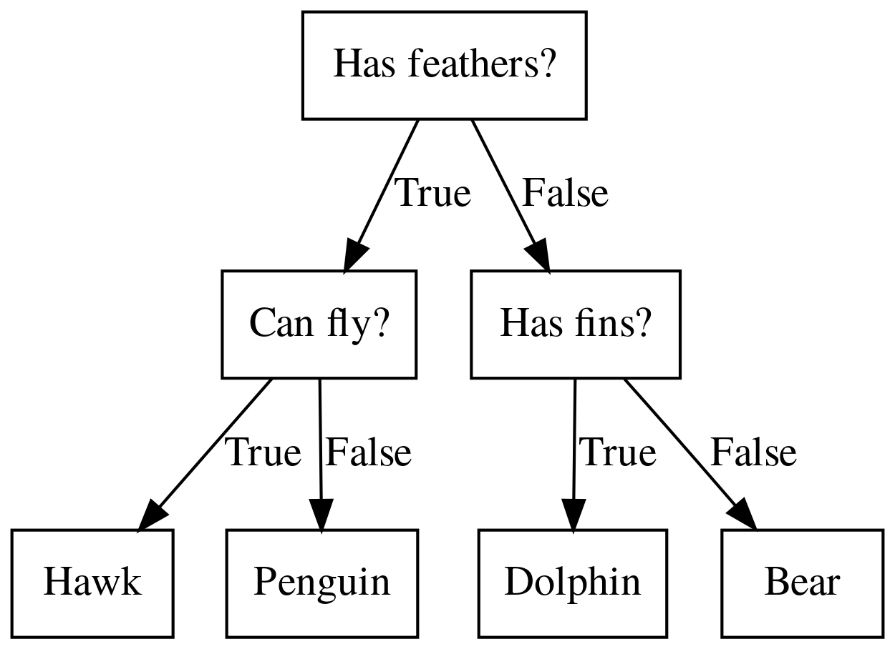
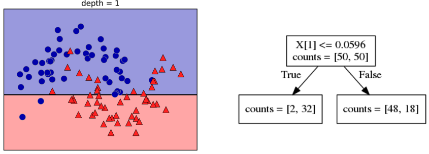
Continuous features:
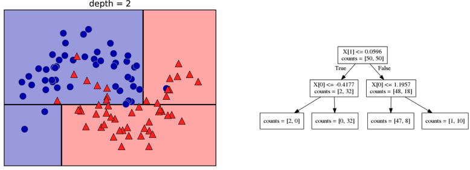
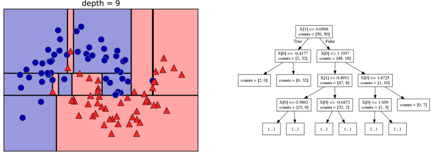
\[\text{Prediction: } \bar{y}_m = \frac{1}{N_m} \sum_{i \in N_m} y_i \]
\[ \text{Mean Squared Error: } H(X_m) = \frac{1}{N_m} \sum_{i \in N_m} (y_i - \bar{y}_m)^2 \]
\[ \text{Mean Absolute Error: } H(X_m) = \frac{1}{N_m} \sum_{i \in N_m} |y_i - \bar{y}_m| \]
from sklearn.datasets import load_breast_cancer
cancer = load_breast_cancer()
X_train, X_test, y_train, y_test = \
train_test_split(cancer.data,cancer.target,
stratify=cancer.target,
random_state=0)
from sklearn.tree import DecisionTreeClassifier, \
export_graphviz
tree = DecisionTreeClassifier(max_depth=2)
tree.fit(X_train, y_train)
# tree visualization (or sklearn.tree.plot_tree)
tree_dot = export_graphviz(tree, out_file=None,
feature_names=cancer.feature_names)
print(tree_dot)
digraph Tree {
node [shape=box, fontname="helvetica"] ;
edge [fontname="helvetica"] ;
0 [label="worst perimeter <= 106.1\ngini = 0.468\nsamples = 426\nvalue = [159, 267]"] ;
1 [label="worst concave points <= 0.134\ngini = 0.081\nsamples = 259\nvalue = [11, 248]"] ;
0 -> 1 [labeldistance=2.5, labelangle=45, headlabel="True"] ;
2 [label="gini = 0.008\nsamples = 240\nvalue = [1, 239]"] ;
1 -> 2 ;
3 [label="gini = 0.499\nsamples = 19\nvalue = [10, 9]"] ;
1 -> 3 ;
4 [label="worst concave points <= 0.142\ngini = 0.202\nsamples = 167\nvalue = [148, 19]"] ;
0 -> 4 [labeldistance=2.5, labelangle=-45, headlabel="False"] ;
5 [label="gini = 0.497\nsamples = 37\nvalue = [20, 17]"] ;
4 -> 5 ;
6 [label="gini = 0.03\nsamples = 130\nvalue = [128, 2]"] ;
4 -> 6 ;
}
Requires graphviz C library and Python library
!pip install graphviz
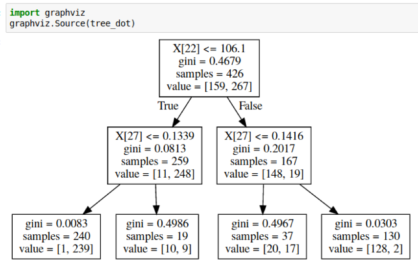
dot -Tpng cancer_tree.dot -o cancer_tree.png
sklearn from sklearn.tree import plot_tree
tree_dot = plot_tree(tree, feature_names=cancer.feature_names)
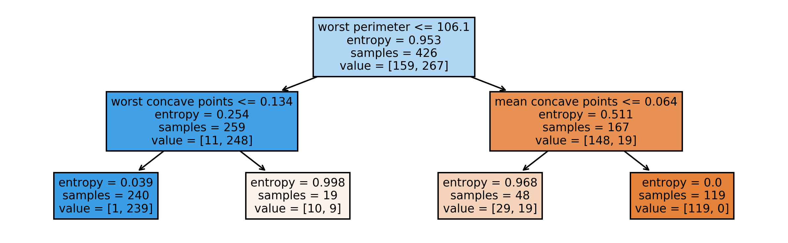
max_depthmax_leaf_nodesmin_samples_splitmin_impurity_decrease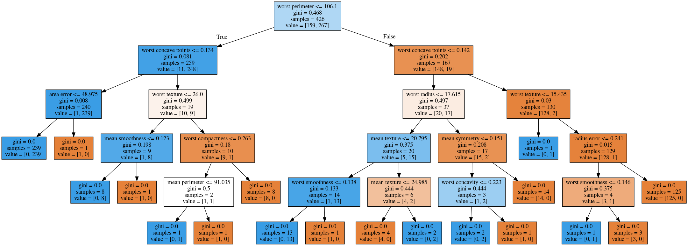
max_depth = 4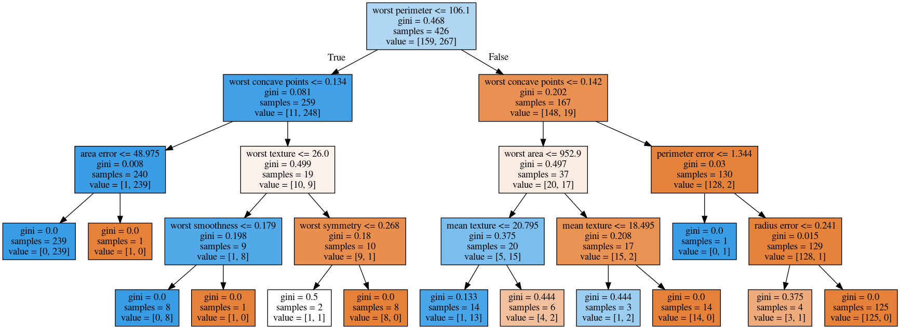
max_leaf_nodes = 8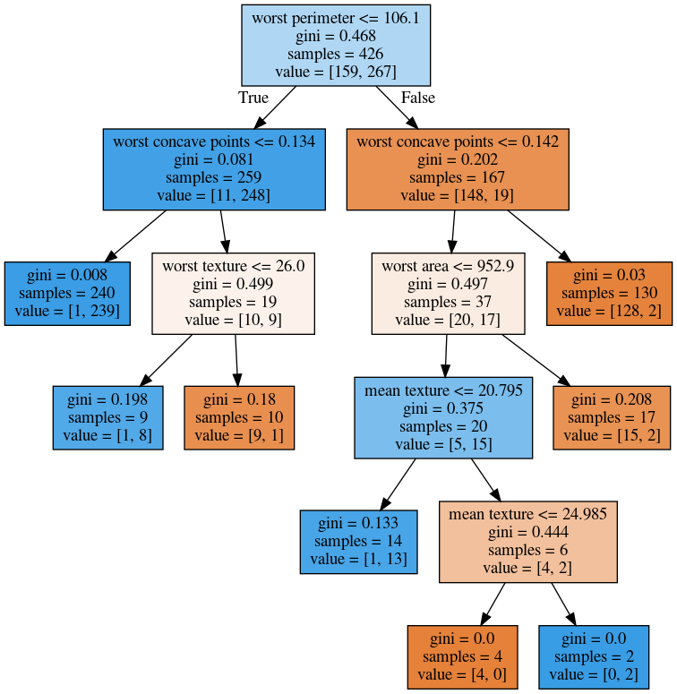
min_samples_split = 50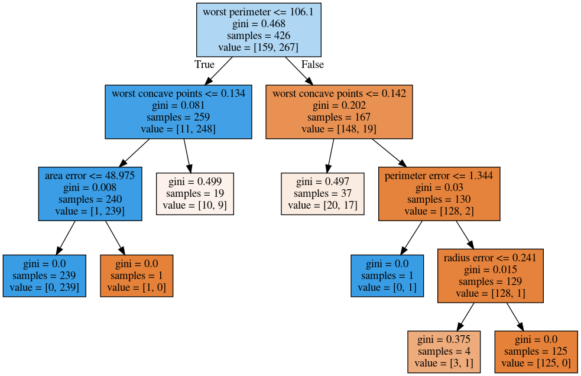
from sklearn.model_selection import GridSearchCV
param_grid = {'max_depth':range(1, 7)}
grid = GridSearchCV(DecisionTreeClassifier(random_state=0),
param_grid=param_grid,
cv=10)
grid.fit(X_train, y_train)
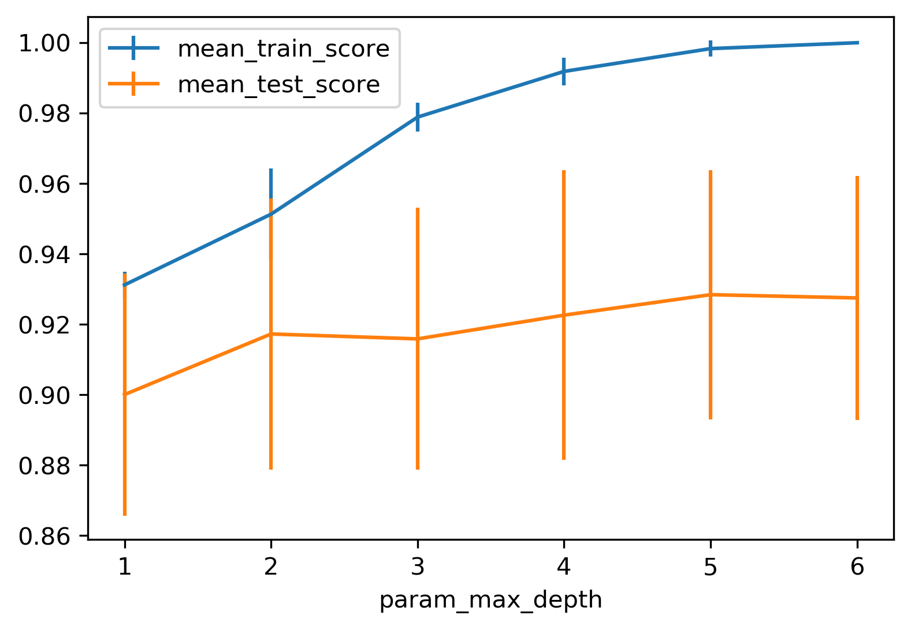
from sklearn.model_selection import GridSearchCV
param_grid = {'max_leaf_nodes':range(2, 20)}
grid = GridSearchCV(DecisionTreeClassifier(random_state=0),
param_grid=param_grid, cv=10)
grid.fit(X_train, y_train)
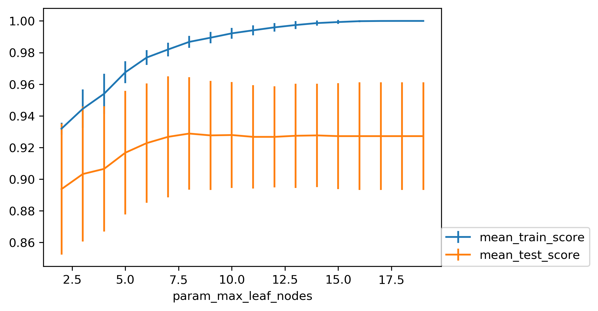
\[ R_\alpha(T) = R(T) + \alpha |T| \]
param_grid = {'ccp_alpha': np.linspace(0.0, 0.03, 20)}
grid = GridSearchCV(DecisionTreeClassifier(random_state=0),
param_grid=param_grid, cv=10)
grid.fit(X_train, y_train)
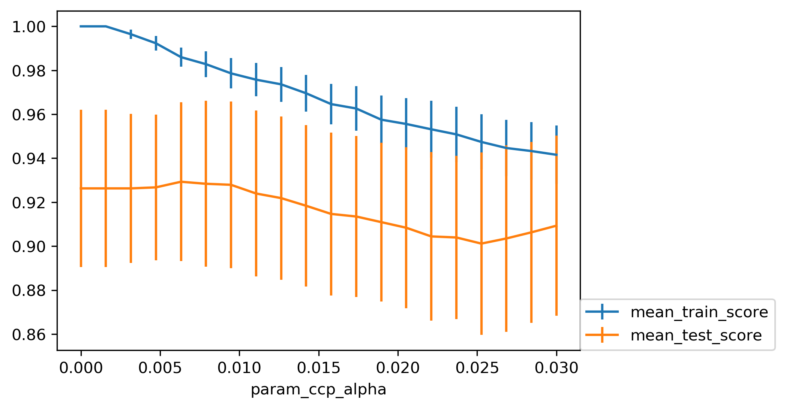
clf = DecisionTreeClassifier(random_state=0)
path = clf.cost_complexity_pruning_path(X_train, y_train)
ccp_alphas, impurities = path.ccp_alphas, path.impurities
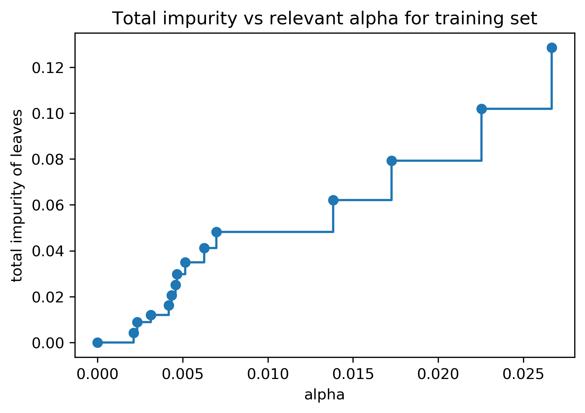
Cost-complexity pruning
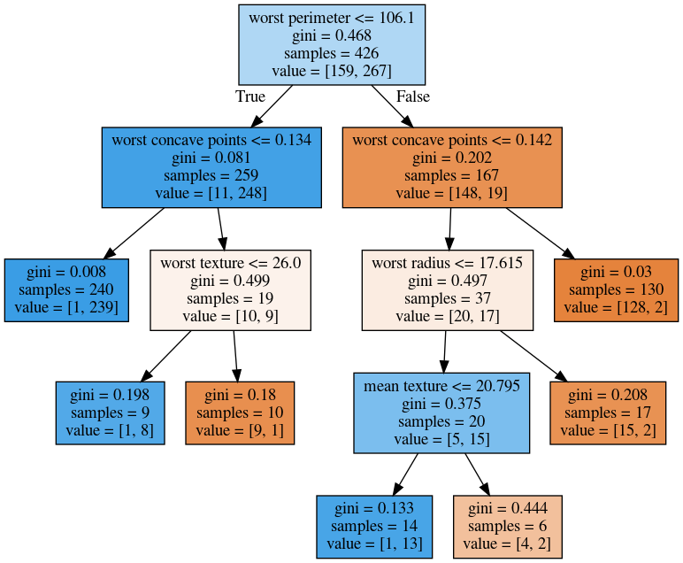
Max leaf nodes search
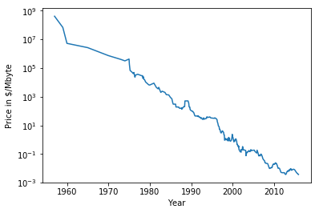
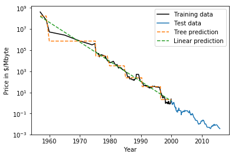
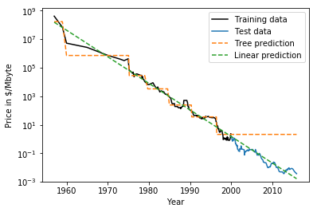
X_train, X_test, y_train, y_test = \
train_test_split(iris.data,
iris.target,
stratify=iris.target,
random_state=0)
tree = DecisionTreeClassifier(max_leaf_nodes=6)
tree.fit(X_train, y_train)
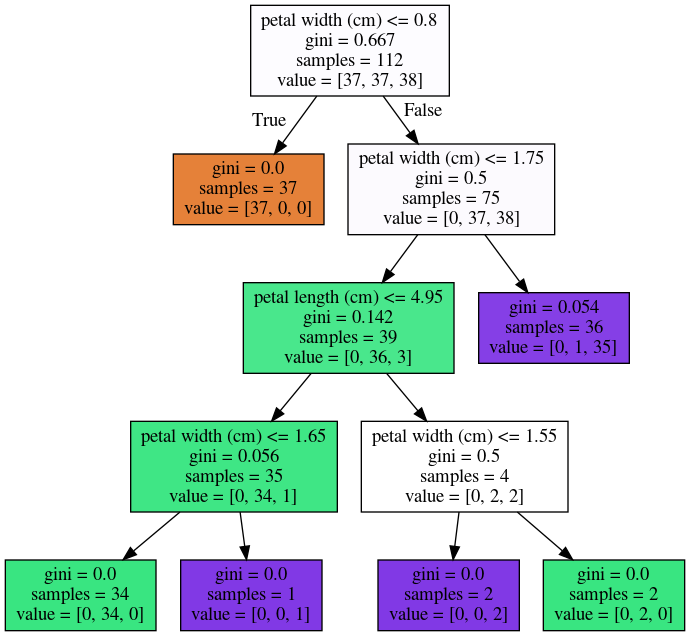
X_train, X_test, y_train, y_test = \
train_test_split(iris.data,
iris.target,
stratify=iris.target,
random_state=1)
tree = DecisionTreeClassifier(max_leaf_nodes=6)
tree.fit(X_train, y_train)
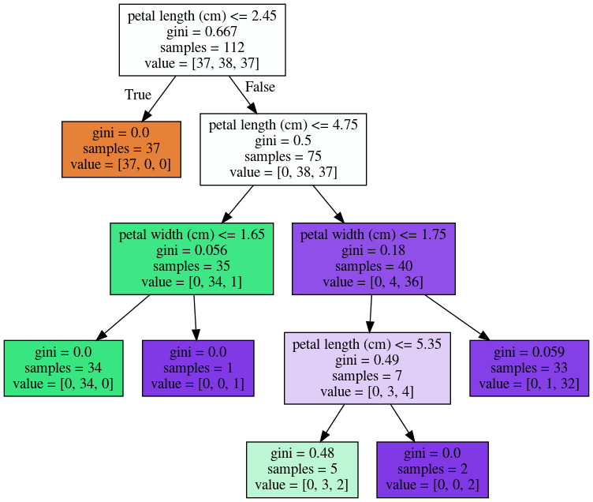
X_train, X_test, y_train, y_test = \
train_test_split(iris.data,
iris.target,
stratify=iris.target,
random_state=1)
tree = DecisionTreeClassifier(max_leaf_nodes=6)
tree.fit(X_train,y_train)
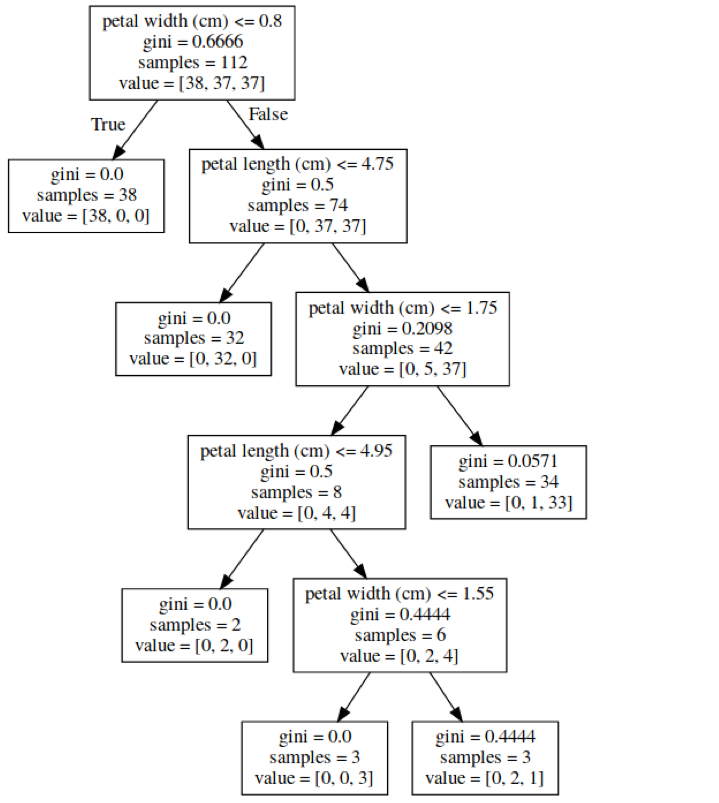
tree.feature_importances_
# array([0.0, 0.0, 0.414, 0.586])
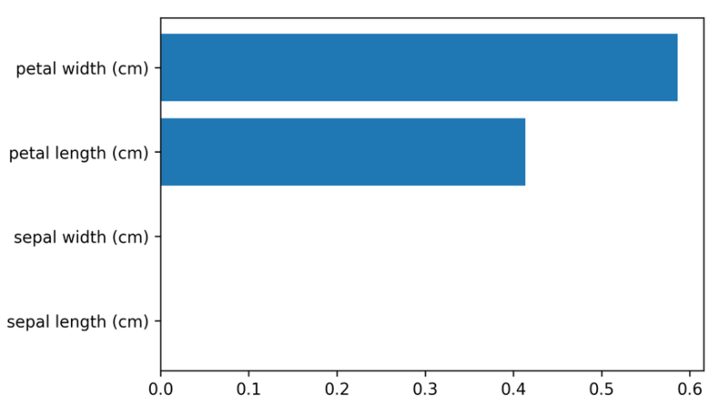
party)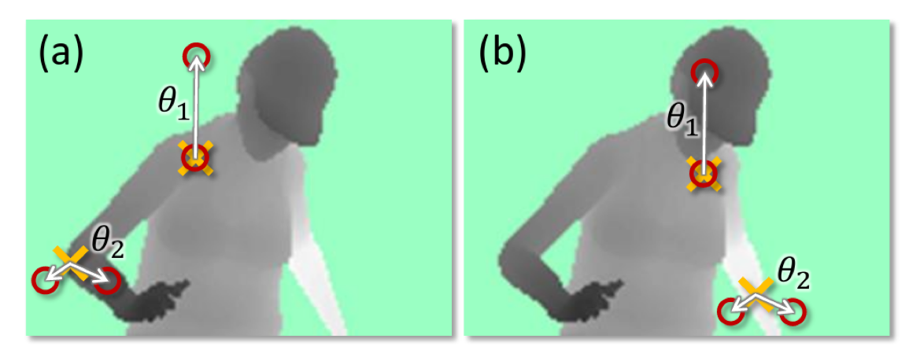 (taken from Shotton et. al. Real-Time Human Pose Recognition)